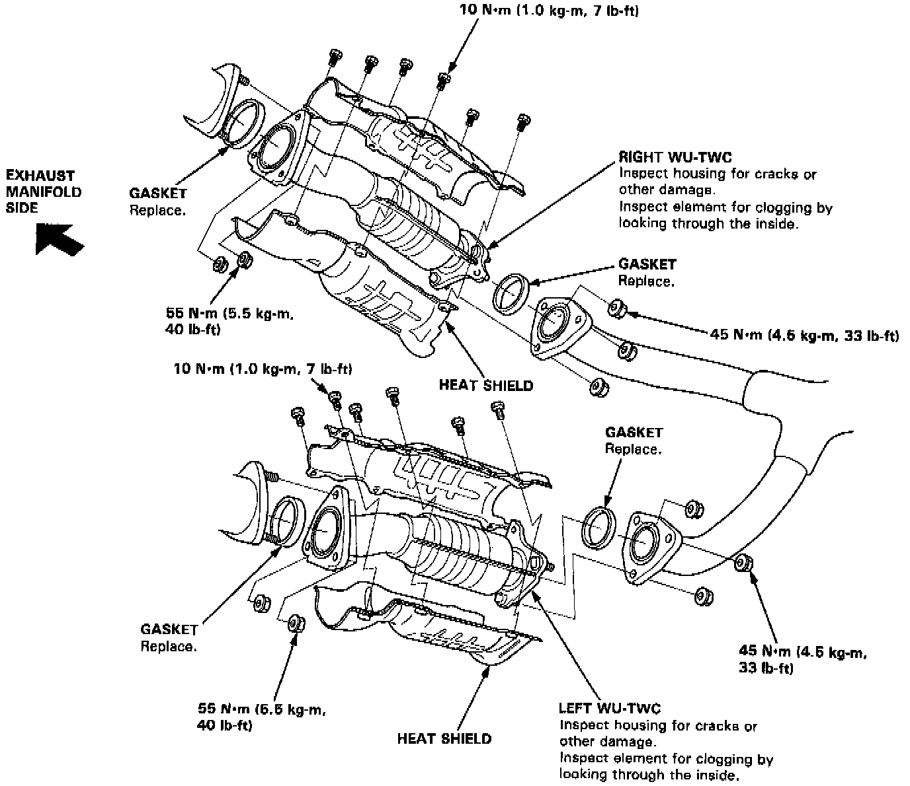

Warm Up Three Way Catalytic Converter

If excessive exhaust system back-pressure is suspected, remove the TWC from the car and make a visual check for plugging, melting or cracking of the three way catalyst. Replace the TWC if any of the visible area is damaged or plugged.